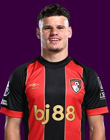

PITCHKEEP
Premier League · FPL · The Pitch
Player File · DEF LIV

Milos Kerkez
DEF · Liverpool · age 22 · £5.5m
FPL ££5.5m
Owned4.0%
Sel. rank#80
Pitch avg139.42
# Boards12
BK Value259
Spread56–215
ICT99.4
EP next2.5
2025/26 Premier League
| Year | Starts | Min | G | A | xG | xA | CS | GC | Bonus | YC | Pts | PPG |
|---|---|---|---|---|---|---|---|---|---|---|---|---|
| 2025/26 | 27 | 2251 | 2 | 1 | 1.5 | 0.69 | 6 | 37 | 4 | 4 | 85 | 2.5 |
The Pitch#177BK 259
Defence#73BK 1,690
Tape · 2025/26 Premier League
Highlights: Brentford 3-2 Liverpool | Kerkez & Salah Goals in Premier League Defeat
Every Board
Spread 56–215 · 12 sources
| Source | Rank |
|---|---|
| FPL EP Next | 56 |
| FPL GW1 Ownership | 80 |
| LiveFPL community | 80 |
| FPL ICT Index | 131 |
| The Athletic FPL | 147 |
| FPL 2025/26 Points | 155 |
| WhoScored PL | 155 |
| Understat xG lean | 155 |
| FPL Draft | 155 |
| Fantasy Football Scout lean | 156 |
| FPL Price Board | 188 |
| FPL xGI | 215 |
On The Pitch nearby — Malo Gusto (#175) · Jacob Murphy (#176) · Iling Jr (#178) · Maxim De Cuyper (#179)